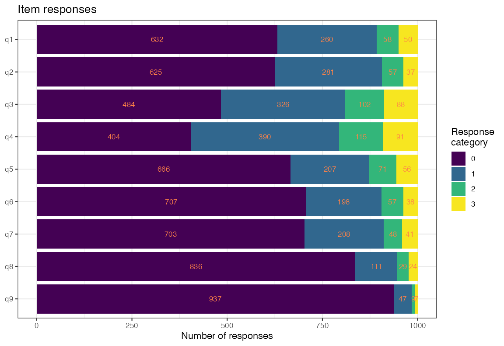
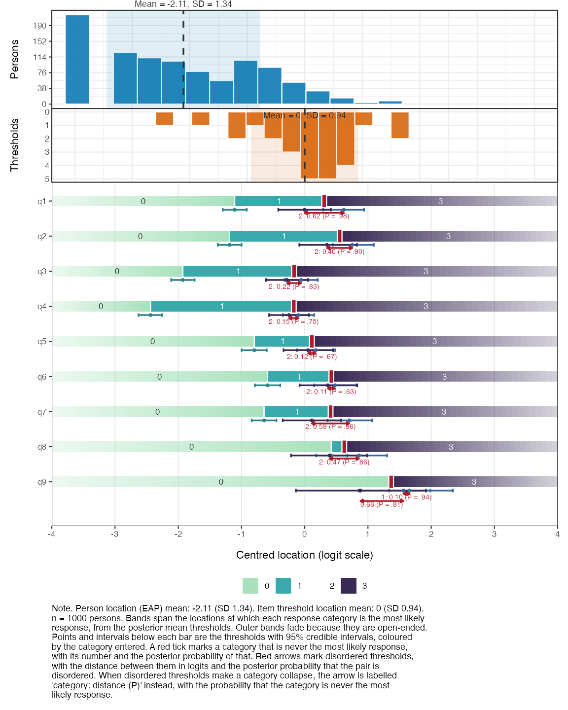
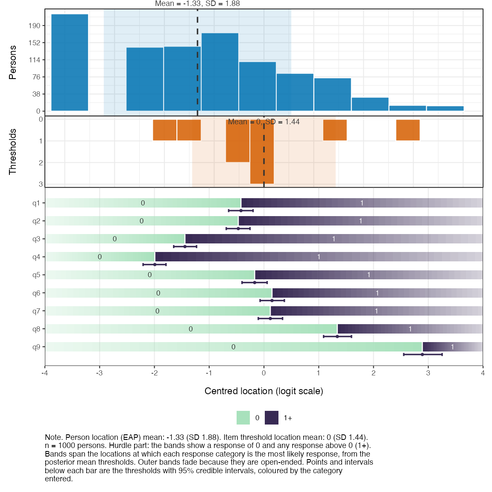
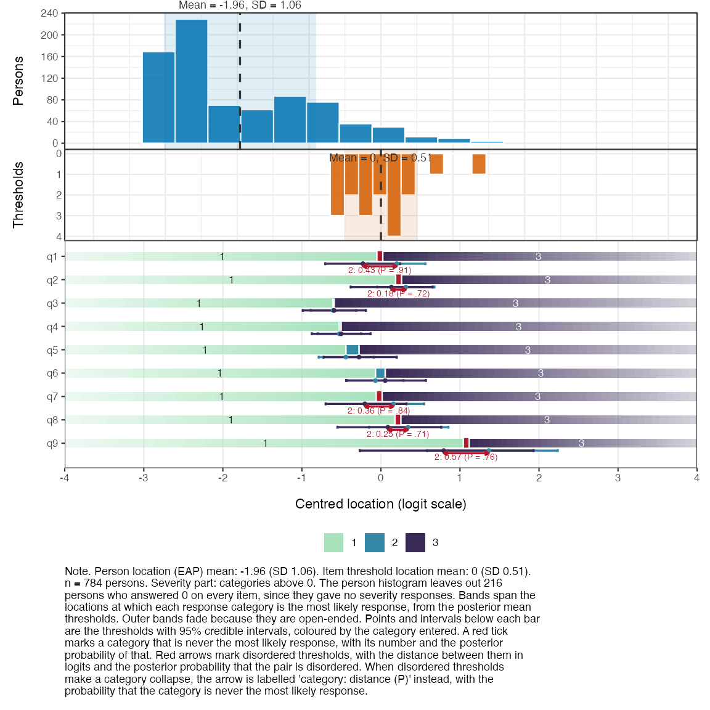
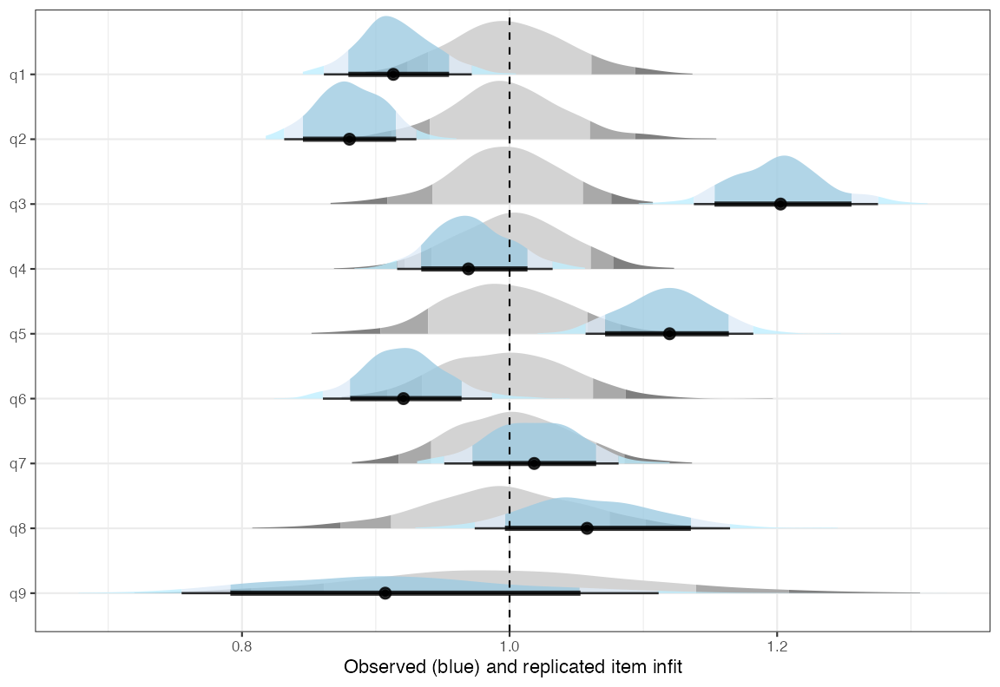
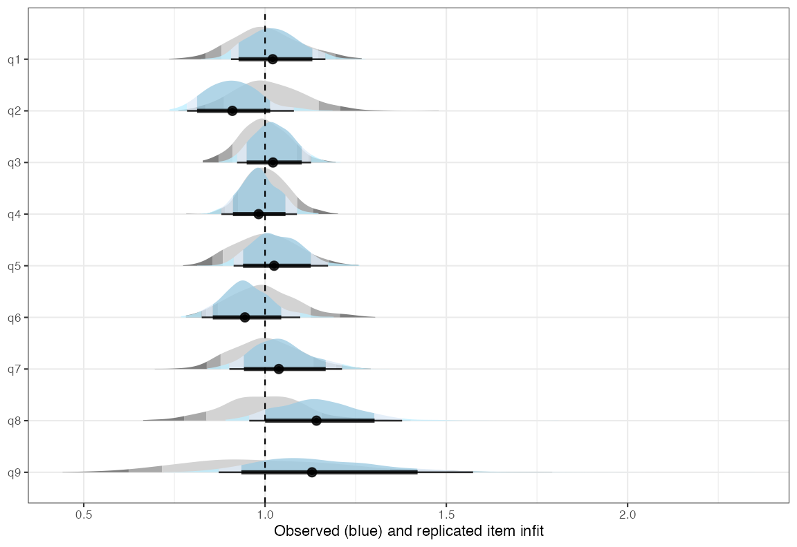
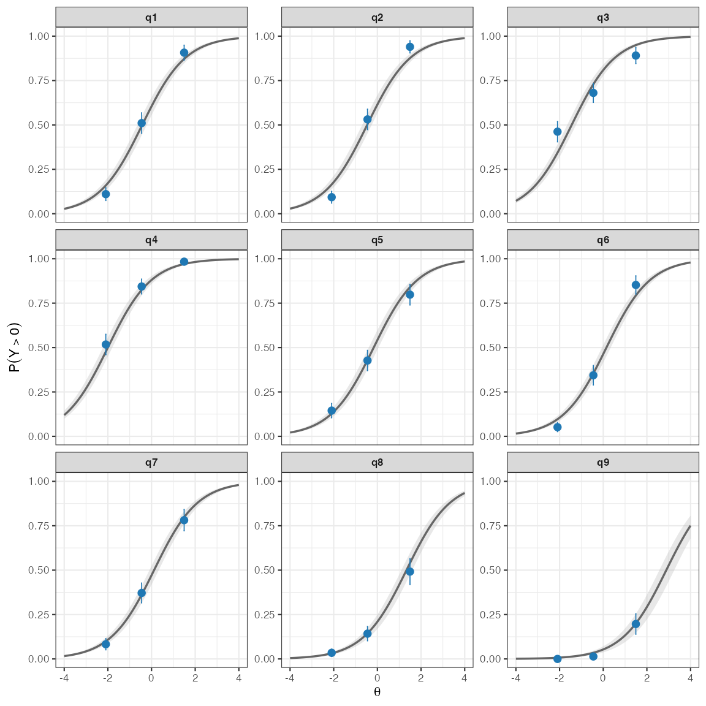
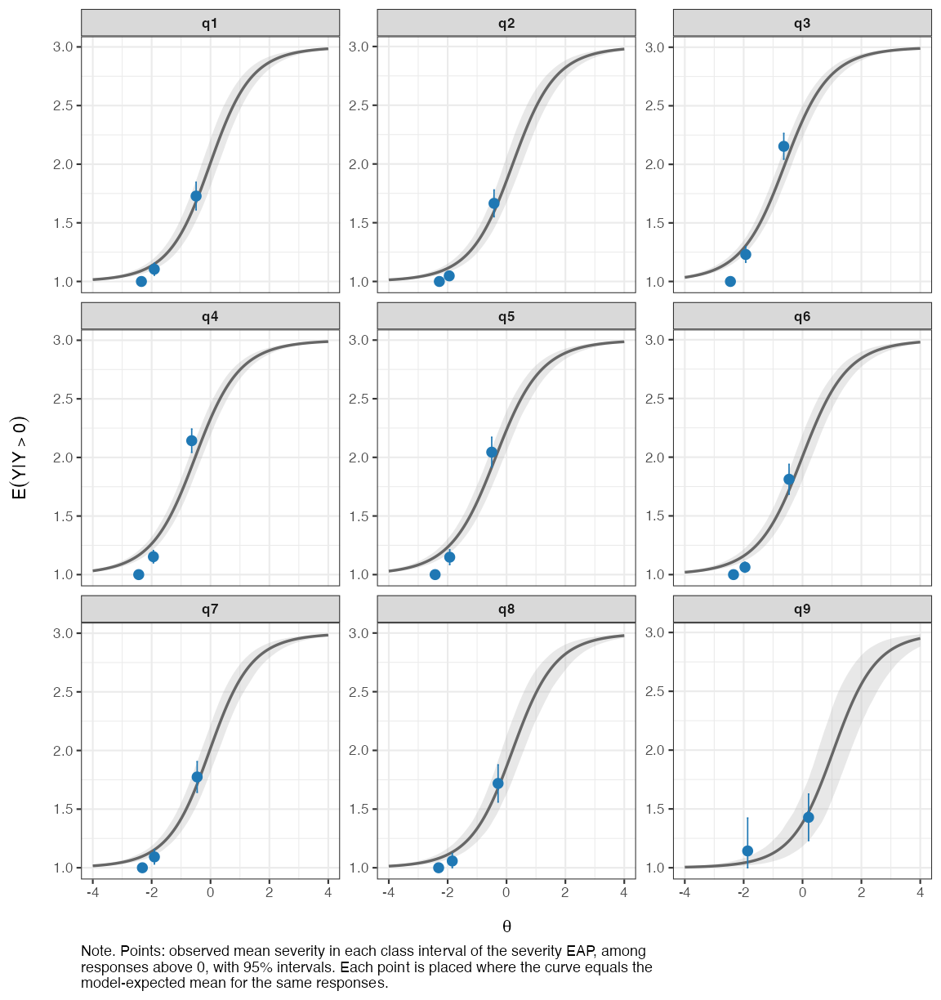
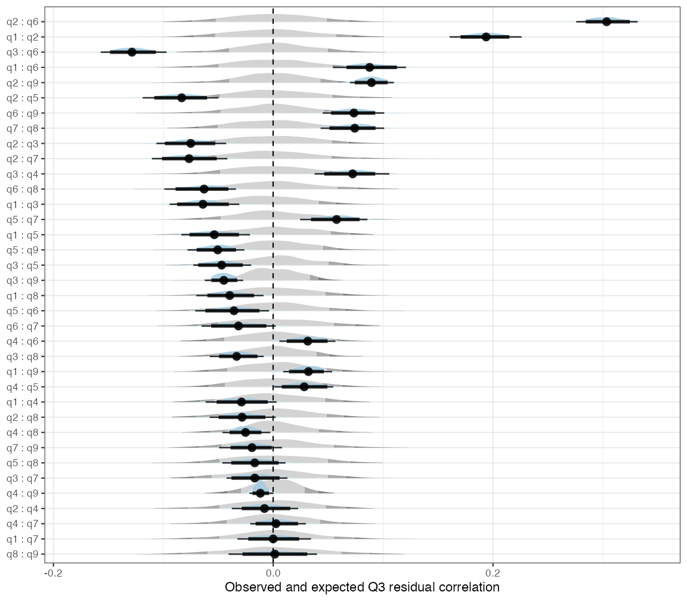
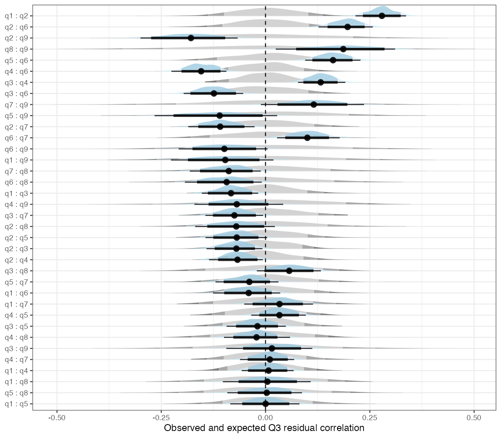

Hurdle Partial Credit Model with easyRaschBayes
Source:vignettes/hpcm-rasch-analysis.Rmd
hpcm-rasch-analysis.RmdOverview
Symptom questionnaires given to a general population sample often have many responses in the lowest category. On the PHQ-9 depression screener, most people answer “Not at all” to most items. A partial credit model (PCM) treats the step from 0 to 1 as one more threshold on the same latent variable as the steps between the higher categories. That may not hold. Not having a symptom at all and how often a present symptom occurs can be different processes.
The hurdle partial credit model (hPCM) separates the two. For each person and item:
- a hurdle submodel, a dichotomous Rasch model, gives the probability of any response above 0 (the symptom is present), and
- a severity submodel, a partial credit model, gives the probability of each category 1, 2, 3 given that the response is above 0.
For person p and item i with categories 0, 1, \dots, m_i, the hurdle submodel is
\operatorname{logit} P(Y_{pi} > 0) = \zeta_p - \delta_i ,
where \zeta_p is the person’s hurdle location and \delta_i the item’s hurdle location. Given a response above 0, the severity submodel is
P(Y_{pi} = k \mid Y_{pi} > 0) = \frac{\exp \sum_{j=2}^{k} (\theta_p - \tau_{ij})} {\sum_{h=1}^{m_i} \exp \sum_{j=2}^{h} (\theta_p - \tau_{ij})}, \qquad k = 1, \dots, m_i ,
where \theta_p is the person’s severity location, \tau_{ij} is the threshold between categories j - 1 and j, and an empty sum is 0. Item i thus has m_i - 1 severity thresholds, two for the PHQ-9 items. The person locations follow a bivariate normal distribution,
\begin{pmatrix} \zeta_p \\ \theta_p \end{pmatrix} \sim \mathcal{N}\left( \begin{pmatrix} 0 \\ 0 \end{pmatrix}, \begin{pmatrix} \sigma_\zeta^2 & \rho \sigma_\zeta \sigma_\theta \\ \rho \sigma_\zeta \sigma_\theta & \sigma_\theta^2 \end{pmatrix} \right).
Each submodel thus has its own person location, and the two are allowed to correlate. The correlation shows whether presence and severity are close to the same trait or two distinct ones. The two correlated traits come from the zero-inflated graded response model of Magnus and Garnier-Villarreal (2022). The hPCM is the Rasch counterpart of the hurdle version of that model (Magnus and Liu 2022), with partial credit in place of graded response. In a hurdle model every zero comes from the hurdle submodel: everyone can have the symptom, and a zero means that it was not reported, not that it could not occur.
The model is fitted with the custom brms (Bürkner
2021) family hurdle_acat(), contributed by
Kristoffer Magnusson. The functions with the suffix _hpcm
analyse the fitted model.
brms version. On CRAN brms (2.23),
custom ordinal families with grouped thresholds produce invalid Stan
code. Until a fixed version is on CRAN, install the patched branch to
run the code in this vignette:
remotes::install_github("rpsychologist/brms@fix-custom-ordinal-grouped-thres")The output shown here was computed beforehand with that version. For the standard Rasch workflow, see the partial credit model vignette.
Data
phq9_nhanes is a simple random sample of 1000
respondents to the PHQ-9 (Kroenke et al. 2001) in the
U.S. National Health and Nutrition Examination Survey (NHANES, September
2024 release), drawn from everyone who answered all nine items. There
was no selection on scores, so the share of zero responses is that of a
general population sample. See ?phq9_nhanes. Each item is
scored 0 (“Not at all”), 1 (“Several days”), 2 (“More than half the
days”) and 3 (“Nearly every day”).
data(phq9_nhanes)
items <- phq9_nhanes[, 1:9]
sum_score <- rowSums(items)
summary(sum_score)
#> Min. 1st Qu. Median Mean 3rd Qu. Max.
#> 0.000 1.000 3.000 4.416 6.250 24.000
mean(sum_score == 0) # share with a sum score of zero
#> [1] 0.216
round(colMeans(items == 0), 2) # share of zero responses per item
#> q1 q2 q3 q4 q5 q6 q7 q8 q9
#> 0.63 0.62 0.48 0.40 0.67 0.71 0.70 0.84 0.94
plot_stackedbars(items)
Figure 1. Response distribution per item
The highest categories are rare for several items. On q9
(thoughts of being better off dead or of self-harm), about 1% chose
“Nearly every day”. The severity submodel estimates its thresholds from
the responses above 0 only, so these thresholds will be uncertain.
For brms, the data go to long format, one row per person
and item. The hurdle family uses the responses as they are, coded from
0, since category 0 is the hurdle. The ordinary PCM below needs
categories starting at 1, so it gets a separate response column.
df_hpcm <- items %>%
rownames_to_column("id") %>%
pivot_longer(!id, names_to = "item", values_to = "response") %>%
mutate(response_pcm = response + 1)
head(df_hpcm)
#> # A tibble: 6 × 4
#> id item response response_pcm
#> <chr> <chr> <int> <dbl>
#> 1 1 q1 0 1
#> 2 1 q2 0 1
#> 3 1 q3 1 2
#> 4 1 q4 0 1
#> 5 1 q5 0 1
#> 6 1 q6 0 1A partial credit model first
To see the problem the hurdle model addresses, we first fit an ordinary PCM.
fit_pcm <- brm(
response_pcm | thres(gr = item) ~ 1 + (1 | id),
data = df_hpcm,
family = acat,
prior = prior("normal(0, 3)", class = "Intercept") +
prior("normal(0, 3)", class = "sd", group = "id"),
chains = 4, cores = 4, iter = 2000
)
saveRDS(fit_pcm, "fits/fit_pcm_nhanes.rds")
fit_pcm <- readRDS("fits/fit_pcm_nhanes.rds")
plot_targeting(fit_pcm, height_ratios = c(2, 1.5, 7))
Figure 2. Targeting, partial credit model
The 216 persons with a sum score of zero all get the same, lowest, location and form the spike at the left of the person histogram. The PCM cannot tell them apart. The item panel shows a second problem: for eight of the nine items, category 2 (“More than half the days”) is never the most likely response, because its thresholds are disordered. The PCM places the step from 0 to 1 and the steps between the higher categories on one scale, and in these data they do not line up.
infit_pcm <- infit_post(infit_statistic(fit_pcm, ndraws_use = 500))
infit_pcm$summary
#> # A tibble: 9 × 4
#> item infit_obs infit_rep infit_ppp
#> <chr> <dbl> <dbl> <dbl>
#> 1 q1 1.04 1 0.758
#> 2 q2 0.797 1.01 0.002
#> 3 q3 1.27 0.997 1
#> 4 q4 1.01 0.999 0.566
#> 5 q5 1.17 1 0.994
#> 6 q6 0.872 1.00 0.046
#> 7 q7 1.04 1.00 0.706
#> 8 q8 1.18 1.00 0.93
#> 9 q9 0.922 1.00 0.32
rest_pcm <- item_restscore_post(item_restscore_statistic(fit_pcm, ndraws_use = 500))
rest_pcm$summary
#> # A tibble: 9 × 6
#> item gamma_obs gamma_exp gamma_diff ppp p_adj
#> <chr> <dbl> <dbl> <dbl> <dbl> <dbl>
#> 1 q1 0.698 0.665 0.033 0.934 0.772
#> 2 q2 0.757 0.659 0.098 1 0
#> 3 q3 0.561 0.678 -0.117 0 0
#> 4 q4 0.689 0.682 0.007 0.634 1
#> 5 q5 0.612 0.674 -0.063 0 0.008
#> 6 q6 0.74 0.667 0.073 0.998 0.006
#> 7 q7 0.683 0.665 0.018 0.77 0.99
#> 8 q8 0.689 0.674 0.016 0.7 1
#> 9 q9 0.843 0.677 0.166 1 0.008Infit and item-restscore agree on the items that fit worst.
q3 (sleep) underfits, with infit around 1.27 and an
item-restscore gamma below its expected value. q5
(appetite) shows the same pattern, less strongly. q2
(feeling down) and q6 (feeling bad about yourself) overfit,
and so does q9 by item-restscore. Overfit and underfit are
related here: items in a strongly dependent pair usually overfit, which
makes the other items look more underfit, and q2 and
q6 form such a pair (see local dependence below). Part of
the misfit may also come from forcing presence and severity onto one
scale, which the hurdle model relaxes.
Fitting the hurdle PCM
The hurdle submodel is given by the hu formula.
0 + factor(item) gives each item its own hurdle difficulty,
and (1 |g| id) in both formulas gives each person one
location per submodel, with the label g telling
brms to estimate their correlation.
thres(gr = item) gives each item its own severity
thresholds, as in the PCM.
prior_hpcm <- prior("normal(0, 3)", class = "Intercept") +
prior("normal(0, 3)", class = "b", dpar = "hu") +
prior("normal(0, 3)", class = "sd", group = "id") +
prior("normal(0, 3)", class = "sd", group = "id", dpar = "hu") +
prior("lkj(2)", class = "cor")
fit_hpcm <- brm(
bf(
response | thres(gr = item) ~ 1 + (1 |g| id),
hu ~ 0 + factor(item) + (1 |g| id)
),
data = df_hpcm,
family = hurdle_acat(),
stanvars = hurdle_acat_stanvars(),
prior = prior_hpcm,
chains = 4, cores = 4, iter = 2000
)
saveRDS(fit_hpcm, "fits/fit_hpcm.rds")
fit_hpcm <- readRDS("fits/fit_hpcm.rds")Sign convention. In brms, the person
effect in the hu formula is on the logit of P(response =
0), so a higher value means more zeros. The _hpcm functions
flip the sign of the person locations and the correlation, so that a
higher hurdle location means a symptom is more likely to be present.
Item hurdle locations keep the brms direction: a higher
value means more zeros, a harder hurdle to cross. These are \zeta_p and \delta_i in the model above.
Presence and severity: one trait or two?
ipar <- item_parameters_hpcm(fit_hpcm)
ipar$correlation
#> # A tibble: 1 × 4
#> mean sd hdci_lower hdci_upper
#> <dbl> <dbl> <dbl> <dbl>
#> 1 0.655 0.0422 0.570 0.736ipar$correlation summarises the posterior of the
correlation between the hurdle and severity person locations. A
correlation close to 1 means that presence and severity are close to one
trait, and the two submodels mainly differ in how the item thresholds
are arranged. A clearly lower correlation means that knowing whether
someone has symptoms says only part of how severe they are, and the two
locations should be reported separately.
Here the correlation is 0.66, with a 95% interval from 0.57 to 0.74. The two are related, but far from the same trait. Someone who reports many symptoms does not necessarily report them as frequent.
Item parameters
knitr::kable(ipar$hurdle$summary)| item | threshold | location | se | hdci_lower | hdci_upper | n_eff |
|---|---|---|---|---|---|---|
| q1 | 1 | -0.4197 | 0.1133 | -0.6377 | -0.1926 | 1954 |
| q2 | 1 | -0.4689 | 0.1101 | -0.6896 | -0.2567 | 1749 |
| q3 | 1 | -1.4427 | 0.1054 | -1.6399 | -1.2256 | 1974 |
| q4 | 1 | -1.9925 | 0.1072 | -2.2066 | -1.7885 | 2011 |
| q5 | 1 | -0.1698 | 0.1162 | -0.3889 | 0.0742 | 2021 |
| q6 | 1 | 0.1470 | 0.1139 | -0.0684 | 0.3745 | 1892 |
| q7 | 1 | 0.1163 | 0.1146 | -0.0916 | 0.3524 | 2032 |
| q8 | 1 | 1.3388 | 0.1302 | 1.0876 | 1.5955 | 2289 |
| q9 | 1 | 2.8916 | 0.1789 | 2.5343 | 3.2298 | 2946 |
knitr::kable(ipar$pcm$locations_wide)| item | t1 | t2 | location |
|---|---|---|---|
| q3 | -0.6051 | -0.5922 | -0.5986 |
| q4 | -0.5274 | -0.5039 | -0.5157 |
| q5 | -0.4432 | -0.2768 | -0.3600 |
| q7 | 0.1575 | -0.2027 | -0.0226 |
| q1 | 0.2000 | -0.2275 | -0.0138 |
| q6 | -0.0690 | 0.0543 | -0.0074 |
| q8 | 0.3421 | 0.0883 | 0.2152 |
| q2 | 0.3154 | 0.1316 | 0.2235 |
| q9 | 1.3642 | 0.7945 | 1.0793 |
The hurdle table gives one difficulty per item. Items with high
values are those most people do not endorse at all. q4
(feeling tired) is the easiest symptom to report (-2.0) and
q9 (thoughts of self-harm) by far the hardest (2.9). The
severity table gives the thresholds between categories 1 and 2 and
between 2 and 3, for those who endorsed the item.
ipar$pcm$threshold_order
#> # A tibble: 9 × 4
#> item n_thresholds ordered prob_disordered
#> <chr> <int> <lgl> <dbl>
#> 1 q1 2 FALSE 0.915
#> 2 q2 2 FALSE 0.716
#> 3 q3 2 TRUE 0.474
#> 4 q4 2 TRUE 0.466
#> 5 q5 2 TRUE 0.292
#> 6 q6 2 TRUE 0.352
#> 7 q7 2 FALSE 0.844
#> 8 q8 2 FALSE 0.708
#> 9 q9 2 FALSE 0.756Among those who report a symptom, the two severity thresholds are
close together, and for q1, q7,
q9, q2 and q8 the posterior
probability that they are disordered is above 0.7. Separating out the
zeros does not remove the weak middle category. It suggests that “More
than half the days” is hard to tell apart from its neighbours.
Targeting
targ <- plot_targeting_hpcm(fit_hpcm)
targ$hurdle
Figure 3. Targeting, hurdle submodel
targ$pcm
Figure 4. Targeting, severity submodel
In the hurdle plot, the item difficulties spread from about -2 to 3
and cover most of the persons. The persons who answered 0 on every item
still form a spike at the low end, but the rest of the distribution is
spread out, unlike in the PCM. The severity plot shows only the 784
persons with at least one response above 0. Their mean severity is about
2 logits below the mean threshold: most of those who report symptoms
report them as occurring on “Several days”, so the severity thresholds
are targeted above most of the sample. The category bands show the
disordered severity thresholds from above: for q1,
q2, q7, q8 and q9,
category 2 is marked in red, with posterior probabilities from 0.71 to
0.91 that it is never the most likely response.
Item fit
infit_statistic_hpcm() computes posterior predictive
infit for each submodel. The hurdle infit uses all responses, with 0
versus above 0 as the outcome. The severity infit uses only the
responses above 0. Each part is summarised with
infit_post().
infit_hpcm <- infit_statistic_hpcm(fit_hpcm, ndraws_use = 500)
infit_hu <- infit_post(infit_hpcm$hurdle)
infit_hu$summary
#> # A tibble: 9 × 4
#> item infit_obs infit_rep infit_ppp
#> <chr> <dbl> <dbl> <dbl>
#> 1 q1 0.915 1.00 0.04
#> 2 q2 0.881 0.999 0.01
#> 3 q3 1.20 0.998 1
#> 4 q4 0.971 1.00 0.242
#> 5 q5 1.12 0.996 0.988
#> 6 q6 0.922 0.997 0.1
#> 7 q7 1.02 1.00 0.606
#> 8 q8 1.06 0.995 0.804
#> 9 q9 0.914 0.997 0.256
infit_hu$plot
Figure 5. Infit, hurdle submodel
infit_sev <- infit_post(infit_hpcm$pcm)
infit_sev$summary
#> # A tibble: 9 × 4
#> item infit_obs infit_rep infit_ppp
#> <chr> <dbl> <dbl> <dbl>
#> 1 q1 1.02 1.00 0.58
#> 2 q2 0.912 1.01 0.21
#> 3 q3 1.02 0.997 0.632
#> 4 q4 0.984 1.00 0.406
#> 5 q5 1.03 1.00 0.614
#> 6 q6 0.949 0.996 0.334
#> 7 q7 1.04 1.00 0.618
#> 8 q8 1.15 0.999 0.834
#> 9 q9 1.16 1.01 0.68
infit_sev$plot
Figure 6. Infit, severity submodel
Unlike infit_statistic() for Rasch models, these
expected values use the person locations in each posterior draw, not the
total score. The total score is not sufficient for the person locations
in the hurdle model, so the conditional method does not apply. Since the
person locations are estimated from the same data, the posterior
predictive p-values are conservative: values near 0 or 1 occur less
often than they should when an item misfits. For the same reason,
item_restscore_statistic() is not available for the hurdle
model.
The conditional item characteristic curves show where along each latent variable the observed responses depart from the model.
icc <- plot_icc_hpcm(fit_hpcm, class_intervals = 3)
icc$hurdle
Figure 7. Conditional ICC, hurdle submodel
icc$pcm
Figure 8. Conditional ICC, severity submodel
Three class intervals are used here, since with more intervals
several severity points fall at the floor and overlap. In the hurdle
panel, q3 is flatter than the model curve: people low on
the presence trait report sleep problems more often than expected, which
matches its infit above 1. q2 is steeper than the curve,
matching its infit below 1.
In the severity panel, persons are grouped by their severity EAP,
since the hurdle model has no sufficient sum score. EAPs are shrunk
toward the mean, so each interval is placed where the curve equals the
model’s expected mean for the same responses, and the observed points
can be compared with the curve as in the other ICC plots. For several
items, most clearly q3, q4 and
q5, the observed mean is below the curve in the lowest
interval and above it in the highest, so severity separates persons a
little more than the model expects.
Local dependence
q3_statistic_hpcm() computes Yen’s Q3 residual
correlations for each submodel, and q3_post() summarises
them. As for infit, the residuals use the person locations in each
draw.
q3_hpcm <- q3_statistic_hpcm(fit_hpcm, ndraws_use = 500)
q3_hu <- q3_post(q3_hpcm$hurdle)
q3_hu$summary
#> # A tibble: 36 × 8
#> item_pair item_1 item_2 q3_obs q3_rep q3_diff q3_ppp q3_p_adj
#> <chr> <chr> <chr> <dbl> <dbl> <dbl> <dbl> <dbl>
#> 1 q2 : q6 q2 q6 0.303 -0.002 0.305 1 0
#> 2 q1 : q2 q1 q2 0.193 0 0.193 1 0
#> 3 q1 : q6 q1 q6 0.088 -0.001 0.089 0.98 0.25
#> 4 q2 : q9 q2 q9 0.089 0 0.089 0.996 0.056
#> 5 q6 : q9 q6 q9 0.073 -0.001 0.075 0.98 0.412
#> 6 q7 : q8 q7 q8 0.073 -0.001 0.075 0.964 0.468
#> 7 q3 : q4 q3 q4 0.071 -0.001 0.072 0.962 0.578
#> 8 q5 : q7 q5 q7 0.057 0.001 0.056 0.916 0.868
#> 9 q4 : q6 q4 q6 0.031 -0.001 0.032 0.832 0.996
#> 10 q1 : q9 q1 q9 0.031 0.002 0.029 0.81 1
#> # ℹ 26 more rows
q3_hu$plot
Figure 9. Q3, hurdle submodel
q3_sev <- q3_post(q3_hpcm$pcm)
q3_sev$summary
#> # A tibble: 36 × 8
#> item_pair item_1 item_2 q3_obs q3_rep q3_diff q3_ppp q3_p_adj
#> <chr> <chr> <chr> <dbl> <dbl> <dbl> <dbl> <dbl>
#> 1 q1 : q2 q1 q2 0.279 0.001 0.278 1 0.004
#> 2 q2 : q6 q2 q6 0.195 0.002 0.193 0.994 0.148
#> 3 q8 : q9 q8 q9 0.182 0.002 0.181 0.818 0.998
#> 4 q5 : q6 q5 q6 0.162 0.004 0.158 0.964 0.614
#> 5 q3 : q4 q3 q4 0.133 0 0.133 0.98 0.352
#> 6 q7 : q9 q7 q9 0.115 -0.003 0.118 0.788 1
#> 7 q6 : q7 q6 q7 0.1 -0.004 0.104 0.84 0.996
#> 8 q3 : q8 q3 q8 0.056 0.001 0.055 0.684 1
#> 9 q1 : q7 q1 q7 0.032 -0.005 0.037 0.658 1
#> 10 q4 : q5 q4 q5 0.033 -0.001 0.034 0.658 1
#> # ℹ 26 more rows
q3_sev$plot
Figure 10. Q3, severity submodel
The largest residual correlations involve q1 (little
interest), q2 (feeling down) and q6 (feeling
bad about yourself), in both submodels. Q3 is about 0.30 for
q2 and q6 in the hurdle submodel and about
0.28 for q1 and q2 in the severity submodel.
These three items share more than the model allows, in whether they are
reported and in how often.
Presence and severity compared
Splitting the model in two shows where the misfit of the PCM comes from.
-
Item fit. The flagged misfit is in the hurdle part:
q3(sleep) andq5(appetite) underfit, andq2andq1overfit. The overfitting items are the ones in the strongest dependent pairs below, and that dependence also makes the other items look more underfit, so the pattern says more about the mood items than about sleep or appetite as such. In the severity part, the ppp ranges from 0.21 to 0.83, with the highest infit forq8andq9(about 1.15), and nothing is flagged. -
Local dependence. The core mood items depend on
each other in both parts. In the hurdle part, two pairs are flagged
after adjustment for the 36 pairs,
q2withq6(q3_diff0.31) andq1withq2(0.19), and the next largest difference is 0.09. In the severity part,q1withq2is the only flagged pair (0.28,q3_p_adj.004), but six more pairs have differences from 0.10 to 0.19, includingq8withq9,q5withq6andq3withq4. Theirq3_pppvalues range from 0.79 to 0.99, so these differences are uncertain. If they are real, which symptoms occur together frequently is less well described by one severity trait than which symptoms occur at all.
Both comparisons need care. The severity part uses only the responses above 0, about a third of all responses here, and 37% of those with any such response have only one or two. Its statistics are much less certain, and with this sample it has little power to flag misfit or dependence. A severity part without flagged items is therefore weak evidence that it fits. The posterior predictive p-values in both parts are also conservative.
Why would the two parts differ? Watts et al. (2026) found that broad dimensions of psychopathology are strongly associated among people with few or no symptoms and only weakly among people with more symptoms. Much of the covariation between the dimensions thus came from people with few or no symptoms. If the same holds for the items of one scale, people with few or no symptoms would account for much of the association between items in the hurdle part, which models whether each symptom is present. Among those who report a symptom, how often it occurs would depend more on the particular symptom, which would show as more residual dependence in the severity part. That would fit the pattern above, but other explanations fit it too, and this example was not set up to tell them apart. The additional dependence in the severity part rests on pairs whose differences are uncertain, because that part has little information. It also uses only responses above 0, and that selection by itself can change how strongly the items are associated. A more direct check would compare residual correlations between groups of persons at different levels of symptom presence, which needs a larger sample than this one.
Person locations and reliability
ppar <- person_parameters_hpcm(fit_hpcm, draws = TRUE)
head(ppar$hurdle$person_estimates)
#> # A tibble: 6 × 7
#> id n_items sum_score eap eap_se wle wle_se
#> <chr> <int> <int> <dbl> <dbl> <dbl> <dbl>
#> 1 1 9 1 -2.62 0.992 -2.32 1.03
#> 2 2 9 2 -1.84 0.856 -1.54 0.859
#> 3 3 9 1 -2.60 0.968 -2.32 1.03
#> 4 4 9 9 3.62 1.11 4.13 1.82
#> 5 5 9 8 2.07 0.865 2.47 1.14
#> 6 6 9 0 -3.87 1.30 -3.68 1.64
head(ppar$pcm$person_estimates)
#> # A tibble: 6 × 5
#> id sum_score n_active eap eap_se
#> <chr> <int> <int> <dbl> <dbl>
#> 1 1 1 1 -3.08 1.10
#> 2 2 2 2 -2.92 0.979
#> 3 3 1 1 -2.98 1.14
#> 4 4 24 9 1.12 0.524
#> 5 5 14 8 -0.589 0.454
#> 6 6 0 0 -3.41 1.25Each person gets a hurdle location (with EAP and WLE) and a severity location (EAP only). The severity location of a person who answered 0 on every item rests on the prior and on the correlation with the hurdle location only, since that person gave no severity responses.
rel <- RMUreliability_hpcm(ppar)
rel$hurdle
#> rmu_estimate hdci_lowerbound hdci_upperbound .width .point .interval
#> 1 0.7955721 0.7754342 0.8134001 0.95 mean hdci
rel$pcm
#> rmu_estimate hdci_lowerbound hdci_upperbound .width .point .interval
#> 1 0.5777624 0.5348526 0.625631 0.95 mean hdciReliability is computed per submodel with relative measurement uncertainty (Bignardi et al. 2026). For comparison, the RMU reliability of the PCM:
person_draws_pcm <- fit_pcm %>%
as_draws_df() %>%
as_tibble() %>%
select(starts_with("r_id")) %>%
t()
RMUreliability(person_draws_pcm)
#> rmu_estimate hdci_lowerbound hdci_upperbound .width .point .interval
#> 1 0.7882207 0.7680069 0.8095181 0.95 mean hdciThe presence location is about as reliable as the PCM location (both about 0.80). The severity location is much less reliable (about 0.58), since it rests on the items each person endorsed, often one or two, and mostly on the lowest positive category.
Does the hurdle model fit better?
Both models describe the same responses, so they can be compared with approximate leave-one-out cross-validation. The PCM uses the response coded from 1, which shifts the category labels but not the probabilities.
loo_pcm <- loo(fit_pcm)
loo_hpcm <- loo(fit_hpcm)
loo_compare(list(PCM = loo_pcm, hPCM = loo_hpcm))
#> model elpd_diff se_diff p_worse diag_diff diag_elpd
#> hPCM 0.0 0.0 NA 31 k_psis > 0.7
#> PCM -218.2 20.6 1.00 19 k_psis > 0.7
#>
#> Diagnostic flags present.
#> See ?`loo-glossary` (sections `diag_diff` and `diag_elpd`)
#> or https://mc-stan.org/loo/reference/loo-glossary.html.loo_compare() warns that the two models do not have the
same response variable, because the PCM response is coded from 1. The
probabilities of the observed responses are the same, so the comparison
is valid. We suppress the warning above.
# Share of Pareto k values above 0.7 (unreliable importance sampling)
mean(loo_pcm$diagnostics$pareto_k > 0.7)
#> [1] 0.002111111
mean(loo_hpcm$diagnostics$pareto_k > 0.7)
#> [1] 0.003444444
# Difference in expected log predictive density per item
elpd_diff <- loo_hpcm$pointwise[, "elpd_loo"] - loo_pcm$pointwise[, "elpd_loo"]
round(tapply(elpd_diff, fit_hpcm$data$item, sum), 1)
#> q1 q2 q3 q4 q5 q6 q7 q8 q9
#> 52.7 30.6 15.6 30.9 23.4 28.8 20.2 10.6 5.4The hurdle PCM predicts held-out responses better, by about 218 in
expected log predictive density (SE about 21). Fewer than 0.5% of the
Pareto k values are above 0.7, so the approximation is reliable. The
gain holds for every item, and is largest for q1 and
smallest for q9, the item most people do not report at
all.